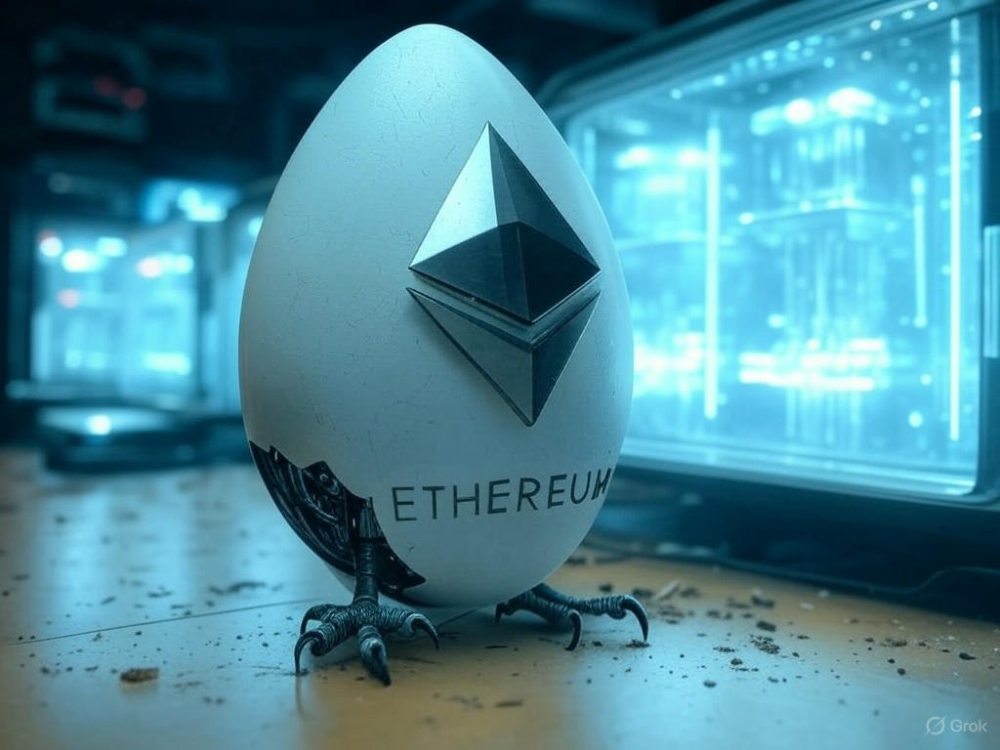
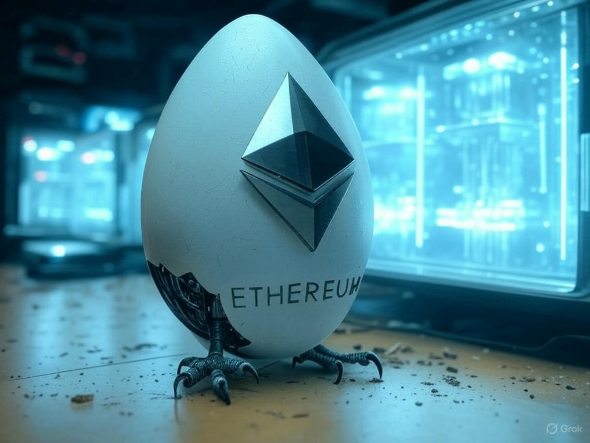

ETHDILITHIUM and ETHFALCON for Ethereum PQ Era
2025 Mar 21
See all posts
ETHDILITHIUM and ETHFALCON for Ethereum PQ Era

(Hatching Ethereum FALCON)
Introduction
In a previous note, we discussed the stakes of a post-quantum
Ethereum future. This entry highlights ZKNOX's efforts over the past
weeks to implement post-quantum signature schemes: FALCON and
DILITHIUM.
Introduction
Among lattice-based signatures, DILITHIUM and FALCON have been
selected by NIST as suitable replacements for ECC. While FALCON is the
fastest and most compact, its signer complexity is significantly higher.
This makes it the preferred choice for on-chain applications, but other
factors led us to implement DILITHIUM as well. Notably, DILITHIUM's
signing algorithm is hardware-friendly and is expected to see secure
element implementations in the near future.
EVM-Friendly Versions
Profiling
Before full implementation, our team performed an initial assessment
of the critical components of both algorithms. A previous post outlined
the core operation—polynomial multiplication—and its optimization using
the Number Theoretic Transform (NTT). ZKNOX successfully reduced a prior
Solidity NTT implementation from 20M to 1.5M gas. This optimization made
hash-to-field computation the dominant cost.
FALCON requires SHAKE as its hash function, but since SHAKE is not
natively supported by the EVM, it must be emulated. Even an optimized
Yul implementation of SHAKE's core permutation requires around 1M gas,
resulting in a total of 10M gas for a full FALCON signature. To address
this, we propose security-equivalent but more gas-efficient
alternatives: ETHFALCON and
ETHDILITHIUM.
PRNG
In cryptography, a hash function with a configurable output length is
called an XOF (Extendable Output Function). The FALCON specification
uses SHAKE as an XOF to generate valid polynomials without bias or
collisions. However, SHAKE is not available as an EVM opcode (see list), making its implementation
costly (>4M gas per nonce-to-polynomial conversion). Some proposals
replaced SHAKE with Keccak in unconventional ways, deriving output from
internal state updates. After discussions with Zhenfei, one of FALCON's
authors, we decided to replace this approach with a standardized
counter-mode generation method.
Encodings
FALCON's raw signature undergoes a compression
function that reduces its size by 30%. While this is
computationally negligible in conventional environments, Solidity's
costly bitwise operations make compression inefficient on-chain. As a
result, Tetration opted to use raw signatures as
input.
In standard FALCON, signature encoding is unique, enforced by
encoding coefficient signs. However, Tetration's approach reintroduced
signature malleability, allowing an attacker to replace
a valid signature with another equivalent one—akin to the ECDSA
vulnerability behind the Mt. Gox disaster. To mitigate this, ZKNOX
proposed enforcing a fixed sign for the first coefficient, ensuring a
unique encoding.
Recovery Version
A key advantage of FALCON over DILITHIUM is its potential for a
recovery-based verification model, similar to ECDSA.
ZKNOX proposes a recovery version of FALCON that modifies the hash
function specification to use the public key's NTT representation. This
allows verification using only an NTT forward
transform, eliminating the need for an inverse NTT.
Toward a PQZK Future
One of Ethereum's long-term visions is a zero-knowledge (ZK)
endgame. ZK circuits working on non-native fields introduce
additional proving costs. To address this, we specified
ZK-friendly alternatives using M31 and
BabyBear fields, optimized for STARK-based
proving systems (e.g., STWO and RISC0). Our goal is to provide
a migration path from BabyJubJub, JubJub, and Bandersnatch curves to
FALZKON and ZKDILITHIUM for private
payments. The security implications of switching fields will be
discussed in a future post.
Complexities
| Scheme |
Public key size |
Signature size |
| Falcon |
897 B |
666 B |
| ETHFalcon |
1 024 B |
1 064 B |
| Dilithium |
1 312 B |
2 420 B |
| ETHDilithium |
20 512 B |
9 248 B |
Note:
the inflated ETHFALCON key size comes from a precomputation of
Decompress+NTT form of the public key.
the large key size of ETHDILITHIUM comes from a precomputation of
the expand+NTT form of the public key.
Results
Benchmarks
The table below summarizes implementation results. While ETHFALCON is
mature, WIP algorithms still have significant room for gas cost
optimization.
| Function |
Description |
Gas Cost |
Test Status |
| ZKNOX_ethfalcon.sol |
EVM-friendly FALCON |
1.9M |
✅ |
| ZKNOX_ethdilithium.sol |
EVM-friendly DILITHIUM |
8.8M |
✅ |
| ZKNOX_falcon.sol |
NIST-compliant FALCON |
12M |
WIP |
| ZKNOX_dilithium.sol |
NIST-compliant DILITHIUM |
19M |
WIP |
| ZKNOX_zkdilithium.sol |
ZK-friendly DILITHIUM |
N/A |
WIP |
| ZKNOX_falzkon.sol |
ZK-friendly FALCON |
N/A |
WIP |
FALCON: On-Chain
Favorite, Signer's Nightmare
As expected, FALCON is the most efficient scheme for
verification. However, implementing its signer in Python
provided insight into the challenges hardware implementations will face.
Memory consumption is high, and the Gaussian sampler relies on complex
floating-point arithmetic.
Discussions with hardware vendors revealed a strong
preference for DILITHIUM due to these difficulties. However,
given Ethereum's on-chain constraints, FALCON remains the preferred
choice for verification.
DILITHIUM: Less
Efficient, but Valuable Features
DILITHIUM is significantly less efficient than
FALCON on-chain, with 4× higher footprint and gas cost.
However, it offers several advantages:
- Easier signer implementation: Secure element
vendors are more likely to adopt DILITHIUM, making it a strong candidate
for widespread adoption.
- ZK-friendliness: A ZK-adapted version of DILITHIUM
is more efficient than FALCON's ZK counterpart.
- MPC compatibility: DILITHIUM is better suited for
multi-party computation (MPC) than FALCON, which could simplify adoption
in TSS-based wallets like Unruggable
Wallets.
| Feature |
FALCON ✅/❌ |
DILITHIUM ✅/❌ |
| Gas Efficiency |
✅ |
❌ |
| Bandwidth |
✅ |
❌ |
| Signer Simplicity |
❌ |
✅ |
| ZK Adaptability |
❌ |
✅ |
| MPC Friendliness |
❌ |
✅ |
Conclusion
Thanks to ZKNOX's work, on-chain post-quantum verification is
now feasible for experimentation. While gas costs are
acceptable for L2s, they remain prohibitively high for most L1 use
cases—except for verifying high-value transactions. The team continue to
work on the ZK versions, and will start embedded implementation.
ETHDILITHIUM and ETHFALCON for Ethereum PQ Era
2025 Mar 21 See all posts
(Hatching Ethereum FALCON)
Introduction
In a previous note, we discussed the stakes of a post-quantum Ethereum future. This entry highlights ZKNOX's efforts over the past weeks to implement post-quantum signature schemes: FALCON and DILITHIUM.
Introduction
Among lattice-based signatures, DILITHIUM and FALCON have been selected by NIST as suitable replacements for ECC. While FALCON is the fastest and most compact, its signer complexity is significantly higher. This makes it the preferred choice for on-chain applications, but other factors led us to implement DILITHIUM as well. Notably, DILITHIUM's signing algorithm is hardware-friendly and is expected to see secure element implementations in the near future.
EVM-Friendly Versions
Profiling
Before full implementation, our team performed an initial assessment of the critical components of both algorithms. A previous post outlined the core operation—polynomial multiplication—and its optimization using the Number Theoretic Transform (NTT). ZKNOX successfully reduced a prior Solidity NTT implementation from 20M to 1.5M gas. This optimization made hash-to-field computation the dominant cost.
FALCON requires SHAKE as its hash function, but since SHAKE is not natively supported by the EVM, it must be emulated. Even an optimized Yul implementation of SHAKE's core permutation requires around 1M gas, resulting in a total of 10M gas for a full FALCON signature. To address this, we propose security-equivalent but more gas-efficient alternatives: ETHFALCON and ETHDILITHIUM.
PRNG
In cryptography, a hash function with a configurable output length is called an XOF (Extendable Output Function). The FALCON specification uses SHAKE as an XOF to generate valid polynomials without bias or collisions. However, SHAKE is not available as an EVM opcode (see list), making its implementation costly (>4M gas per nonce-to-polynomial conversion). Some proposals replaced SHAKE with Keccak in unconventional ways, deriving output from internal state updates. After discussions with Zhenfei, one of FALCON's authors, we decided to replace this approach with a standardized counter-mode generation method.
Encodings
FALCON's raw signature undergoes a compression function that reduces its size by 30%. While this is computationally negligible in conventional environments, Solidity's costly bitwise operations make compression inefficient on-chain. As a result, Tetration opted to use raw signatures as input.
In standard FALCON, signature encoding is unique, enforced by encoding coefficient signs. However, Tetration's approach reintroduced signature malleability, allowing an attacker to replace a valid signature with another equivalent one—akin to the ECDSA vulnerability behind the Mt. Gox disaster. To mitigate this, ZKNOX proposed enforcing a fixed sign for the first coefficient, ensuring a unique encoding.
Recovery Version
A key advantage of FALCON over DILITHIUM is its potential for a recovery-based verification model, similar to ECDSA. ZKNOX proposes a recovery version of FALCON that modifies the hash function specification to use the public key's NTT representation. This allows verification using only an NTT forward transform, eliminating the need for an inverse NTT.
Toward a PQZK Future
One of Ethereum's long-term visions is a zero-knowledge (ZK) endgame. ZK circuits working on non-native fields introduce additional proving costs. To address this, we specified ZK-friendly alternatives using M31 and BabyBear fields, optimized for STARK-based proving systems (e.g., STWO and RISC0). Our goal is to provide a migration path from BabyJubJub, JubJub, and Bandersnatch curves to FALZKON and ZKDILITHIUM for private payments. The security implications of switching fields will be discussed in a future post.
Complexities
Note:
the inflated ETHFALCON key size comes from a precomputation of Decompress+NTT form of the public key.
the large key size of ETHDILITHIUM comes from a precomputation of the expand+NTT form of the public key.
Results
Benchmarks
The table below summarizes implementation results. While ETHFALCON is mature, WIP algorithms still have significant room for gas cost optimization.
FALCON: On-Chain Favorite, Signer's Nightmare
As expected, FALCON is the most efficient scheme for verification. However, implementing its signer in Python provided insight into the challenges hardware implementations will face. Memory consumption is high, and the Gaussian sampler relies on complex floating-point arithmetic.
Discussions with hardware vendors revealed a strong preference for DILITHIUM due to these difficulties. However, given Ethereum's on-chain constraints, FALCON remains the preferred choice for verification.
DILITHIUM: Less Efficient, but Valuable Features
DILITHIUM is significantly less efficient than FALCON on-chain, with 4× higher footprint and gas cost. However, it offers several advantages:
Conclusion
Thanks to ZKNOX's work, on-chain post-quantum verification is now feasible for experimentation. While gas costs are acceptable for L2s, they remain prohibitively high for most L1 use cases—except for verifying high-value transactions. The team continue to work on the ZK versions, and will start embedded implementation.